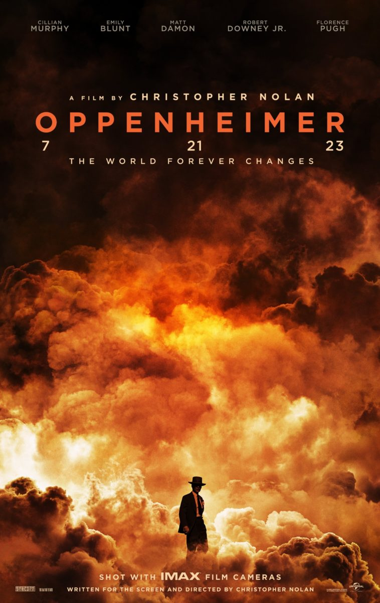

Oppenheimer
(2023)A tense and visually striking historical drama with a serious, atmospheric tone. It combines powerful performances, complex themes, and Christopher Nolan's distinctive nonlinear storytelling.
The Film Club is a place where we share
thoughts, discover great films and talk about
the stories that matter.
Three great movies, three different stories - find your next favorite.
A tense and visually striking historical drama with a serious, atmospheric tone. It combines powerful performances, complex themes, and Christopher Nolan's distinctive nonlinear storytelling.
An emotional and visually spectacular sci-fi film that combines large-scale space exploration with deeply personal themes. Its ambitious visuals, memorable soundtrack, and thought-provoking ideas make it especially engaging.
A clever and thought-provoking film that balances comedy with darker philosophical themes. Its unique concept, memorable performances, and commentary on media and privacy make it highly discussable.
Three different stories. Three unique experiences.
|
 Oppenheimer |

Interstellar |

Truman Show |
|
Mood |
Serious, tense, intense | Emotional, grand, thought-provoking | Light-hearted, strange, yet unsettling |
Genre |
Historical drama, biography | Sci-fi, adventure, drama | Drama, comedy, satire |
Cinematographic Technique |
Dual Color Timelines & IMAX 70mm | Practical Effects & Pipe Organ Score | Hidden Camera Perspective & Fisheye Lens |
Theme: The play of light and shadow in classic Hollywood noir, corruption, and the blurring of boundaries.
Introductory Thoughts: Welles' masterpiece serves as both the closure and the pinnacle of the classic noir era. We will analyze the legendary uncut tracking shot at the opening, as well as the visual techniques used to build tension.
Discussion Focus: What social anxieties does the film reflect about 1950s America? How does Welles use camera movement to express moral ambiguity?
Theme: The birth of neo-noir in a Far Eastern metropolis; urban alienation and passing time.
Introductory Thoughts: Wong Kar-wai translates the classic lone detective motif to the neon-lit streets of Hong Kong. The film blends traditional noir melancholy with a modern visual style and popular music.
Discussion Focus: How does saturated neon light replace traditional noir darkness? Why do everyday objects (expired canned food, flight attendant uniforms) become symbols of seeking connection?
Theme: Neo-noir and the deconstruction of narrative structure.
Introductory Thoughts: Nolan revives noir's classic narration-driven storytelling, but makes the bold choice to tell the story in reverse chronological order, unseating the viewer from their usual comfort zone.
Discussion Focus: How reliable is the memory of a noir protagonist? How does the film's structure force the viewer themselves to become the detective?